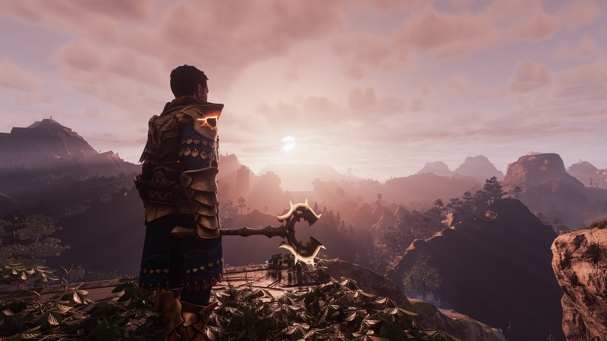

Palworld
Palworld adalah game survival unik yang menggabungkan elemen penangkapan makhluk mirip Pokémon dengan mekanika crafting dan pertempuran. Pemain dapat menjelajahi dunia terbuka, menangkap makhluk yang disebut 'Pals', dan menggunakan mereka dalam pertempuran atau sebagai tenaga kerja untuk membangun berbagai struktur. Game ini menawarkan pengalaman bermain yang segar dengan grafis yang cerah dan gameplay yang mendalam.
Enshrouded
Enshrouded adalah game survival yang berlatar di dunia fantasi yang diselimuti kabut mematikan. Pemain berperan sebagai 'Flameborn' yang bertugas membersihkan dunia dari korupsi. Game ini menawarkan elemen crafting, pembangunan basis, dan pertempuran melawan berbagai makhluk berbahaya. Dengan grafis yang memukau dan mekanika permainan yang kompleks, Enshrouded memberikan pengalaman survival yang menantang dan memuaskan.
Sons of the Forest

Sons of the Forest adalah sekuel dari game survival horor populer The Forest. Pemain ditugaskan untuk mencari miliarder yang hilang di pulau terpencil yang dihuni oleh kanibal dan makhluk mutan. Game ini menawarkan elemen crafting, pembangunan tempat berlindung, dan pertempuran yang intens. Dengan grafis yang ditingkatkan dan AI musuh yang lebih cerdas, Sons of the Forest memberikan pengalaman survival horor yang mendalam dan menegangkan.